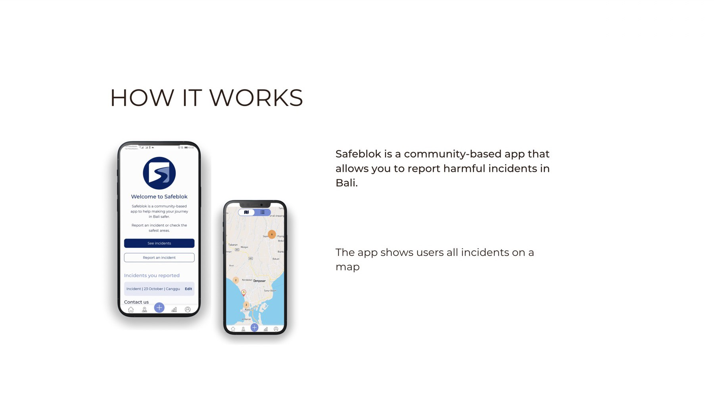
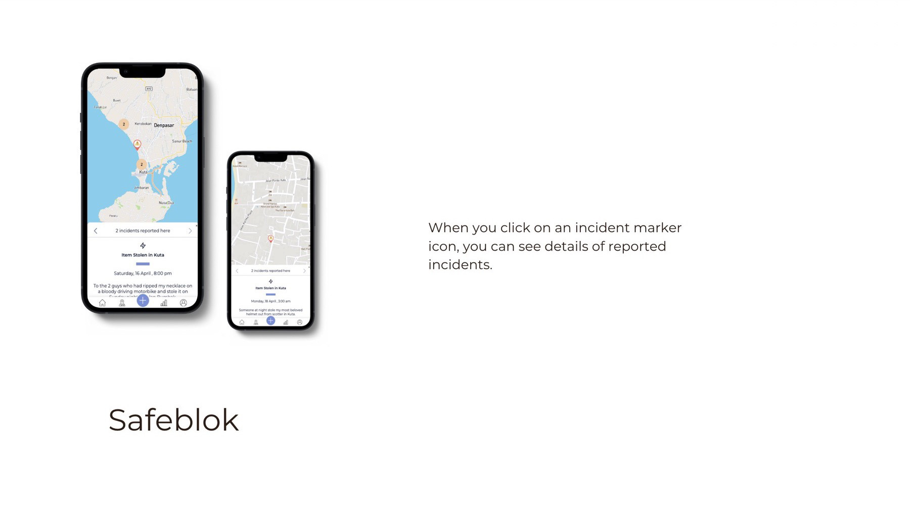
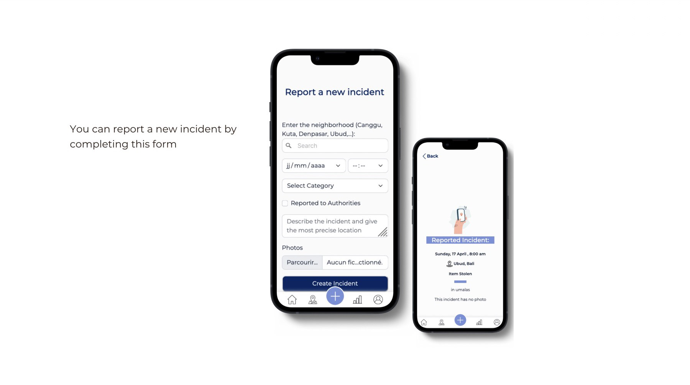
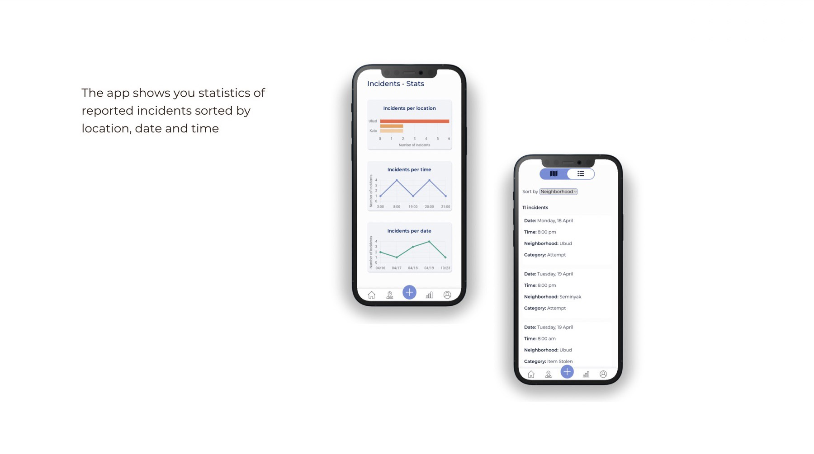

Team project
Safeblok
Make your journey in Bali safer.
A community-based web app for foreigners living in Bali. People report harmful incidents, like theft or attempted theft, by pinning them on a map, so others can see which areas to be careful in.




